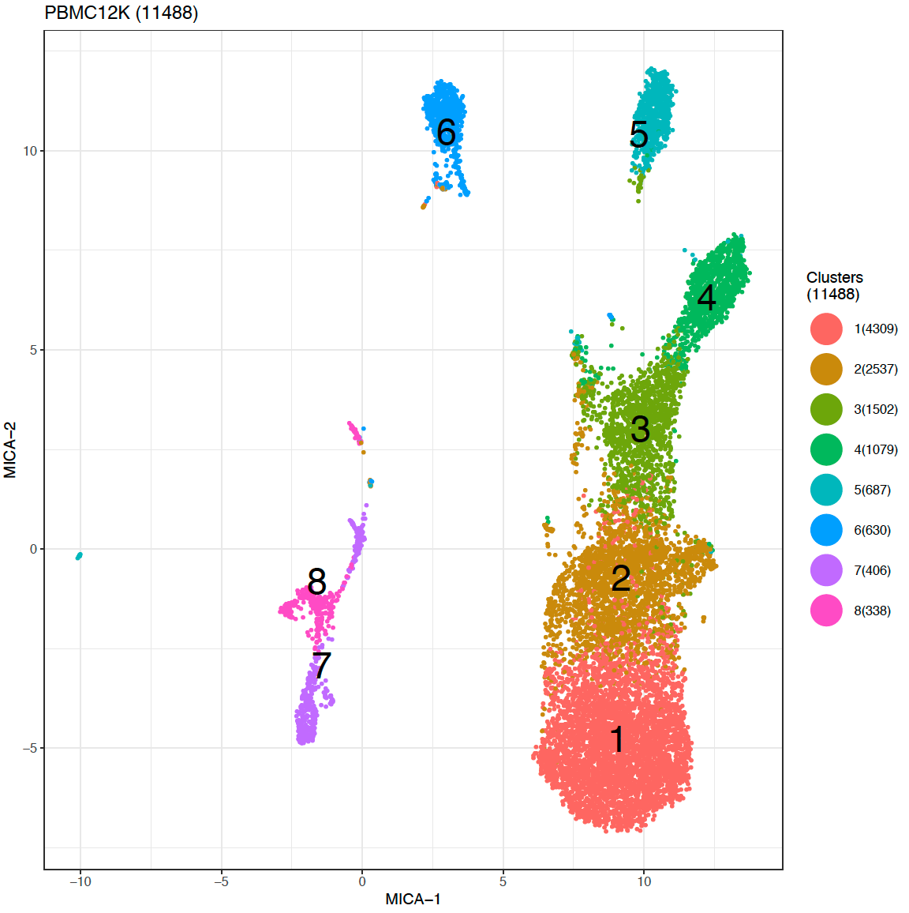

Run clustering with MICA module
MICA(Mutual Information based Clustering Analysis) is a nonlinear clustering analysis tool designed for scRNA-seq data. To install MIE (Mutual inforamtion estimator for distance matrix generation, module required for MICA) and MICA, please refer our MIE and MICA github page.
Table of contents
Preprocssing
Preprocessing is very simple for MICA analysis. You can use our home-made script in R or python, with code
require(scMINER)
d <- pre.MICA (data.input = [your_data], #data matrix that have unique colnames and geneSymbol as rownames
output_rmd = TRUE, #whether or not output Rmarkdown report, default as TRUE
projectName = "PBMC12K",
plot.dir = ".", # save plot at..
sampleID = "Sample", # sample info (could be a string or a vector of original group info))
Enviroment Setup for MIE and MICA
MIE and MICA were both designed primarily for runing in LSF, to set up your LSF environment, please enter following command on your LSF node:
ssh hpc # ssh to a head node
hpcf_interactive # login an interactive node
setcbenv prod # set CompBio environment to prod
cbload phoenix # load CompBio modules
cbload util-python
module load python/3.6.1 # load python for clustering
module load R/3.4.0 # load R for visualization
Basic usage
Run MIE to calculate cell-cell distance matrix
cd [your_mie_root_directory]
./MIE/mie.py Pipeline test_no_intall_LSF \
./test_data/inputs/PBMC_Demo_MICA_input_mini.txt \
./test_data/outputs/ \
test_no_intall_LSF \
--host LSF
Run MICA after MIE is complete, --k defines the number of cluster to try for MICA pipeline
cd [your_mica_root_directory]
./MICA/mica.py Clust PBMC_12k ./PBMC_12k/inputs/PBMC_12k.whole.h5 \
./test_data/inputs/PBMC_12k_mi.h5 ./PBMC_12k/outputs/ PBMC_12k \
--k 7 8 9 10 \
--host LSF
MICA Outputs
Each assigned number of k will output one folder containing following files.
[Project_name]_clust_k[number].rplot.pdf–visualization of clustering result (default as UMAP)

[Project_name]_clust.h5– h5 file containing all intermediate results (including dimention reduced expression matrix, etc.)[Project_name]_mds.pdf– pdf file of t-SNE visualization of mds transformed distance matrix, with perplexity set to 30[Project_name].ggplot.txt– txt file containing visualization coordinates and clustering labels
├── test_no_install_LSF
│ ├── MICA_test_no_install_LSF_MDS_3
│ │ ├── MICA_log
│ │ ├── MICA_out
│ │ │ ├── test_no_install_LSF.ggplot.txt
│ │ │ ├── test_no_install_LSF_clust.h5
│ │ │ ├── test_no_install_LSF_clust_k3.rplot.pdf
│ │ │ └── test_no_install_LSF_mds.pdf
Useful parameters
Visualize with U-map or t-SNE
MICA incorporate UMAP as default clustering visualization, with min_dist parameter set to 0.25, this controls how points packed together. Low values of min_dist will result in clumpier embeddings. You can tune this parameter with :
-- min_dist 0.1 (or other number ranging from 0-1)
tSNE visualization is also integrated in the pipeline, if you want to use t-SNE, just set :
--visualize tsne(all lower cap, no "-")
and you can also set parameter (perplexity) for tsne using
--perplexity 20 (or any other integers larger than 5)
Pick your optimal number of K
Try other number of clusters using preclust function
In order to bypass transformation part and do clustering directly, we incorporate --preclust function into our pipeline, following is the sample usage.
--preclust [path_to: h5 file generated by scMINER in previous clustering (e.g. k=2)]
Try other dimension reduction methods
MICA also incorporated other dimension reduction methods such as pca or lpl, you can use them via adding parameter:
--transformation PCA (or: MDS | PCA | LPL | LPCA)